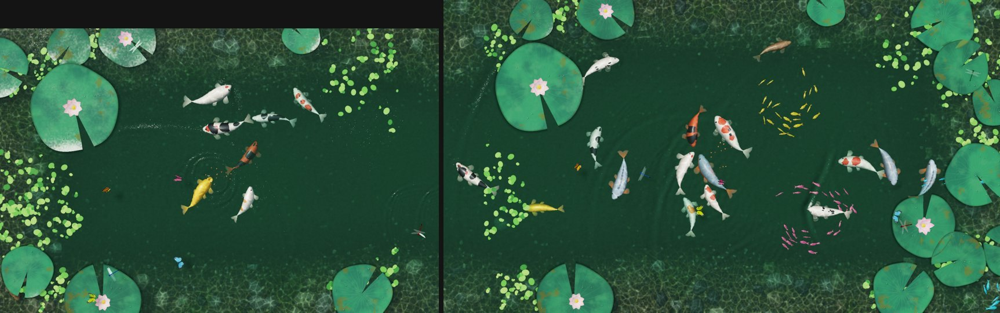

IEEE
TALE 2026
TALE 2026
UNSW Sydney · Computer Science (AI)
AI and software engineer
I build LLM agent systems that people actually use. My grading and misconduct-detection platforms run in courses at UNSW, with monitoring and cost tracking in production.
My honours research at the UNSW CRUISE Lab looks at why vision-language-action models rely on shortcuts, and how reinforcement-learning post-training can make them more robust. I also teach software engineering across six UNSW courses.
Available full-time from December 2026 · Sydney or anywhere in Australia

Side project · macOS and Windows
Realistic koi that swim behind your desktop icons. Twenty koi varieties, light that moves from morning to moonlight, feeding and leaping, and one pond that spans every screen, with ambient sound. A TypeScript and three.js engine runs inside native apps for each platform, with free and full editions.
AI security research
A framework for testing how LLMs hold up against prompt injection and jailbreaks. It runs 17+ attack methods from a library of 2,500+ templates against models from providers including Anthropic, OpenAI, Google, DeepSeek and xAI, and scores responses with an LLM judge, using asynchronous, configurable concurrency.
Mar 2026 - Nov 2026
UNSW CRUISE Lab
Counterfactual debiasing of vision-language-action models via RL post-training, on UNSW Katana HPC (NVIDIA H200).
May 2025 - Present
UNSW School of Computer Science and Engineering
Transformer-based detector for AI-generated code in coursework, using code embeddings and vector retrieval for per-submission confidence, plus interview questions for tutors. Deployed in UNSW courses; first-author paper at IEEE TALE 2026.
May 2025 - Present
UNSW School of Computer Science and Engineering
Course admin and tutor across six software engineering courses (see Teaching).
Aug 2025 - Nov 2025
UNSW School of Information Systems and Technology Management
Audio-input grading platform for presentations and debates: Whisper transcription feeds LangGraph agents that return rubric scores, feedback and evidence. React, FastAPI and Pydantic on Google Cloud Run, in production use in UNSW courses.
May 2025 - Dec 2025
UNSW School of Computer Science and Engineering
Multimodal LLM grading platform for 100+ page theses and reports, with rubric scores, written feedback and PDF-grounded evidence. Tutor approve or reject signals refine the grader through a GRPO-style online loop. Monitoring, error logging and token cost tracking in production.
Sep 2024 - Sep 2025
P2AgentX
YOLO models for solar-panel faults (thermal hotspots, unplugged wiring, dust) and forecasting models for energy yield and revenue. Full-stack delivery: React on AWS Amplify, LangGraph agent backend on AWS, and integration with a four-legged robot for on-site maintenance.
Sep 2024 - Sep 2025
UNSW School of Photovoltaic and Renewable Energy Engineering
Diagnostic pipeline for solar PV maintenance: YOLO detections feed a classifier and RAG system that give technicians fault descriptions and remediation steps. Deployed on AWS.